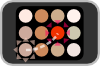

Footsie is a game for two hands, ideally belonging to two people. Here's how to play:
| Start by touching and holding the angry faces in the corners of the screen. One player should place their first two fingers on the purple pulsing faces to the left while the other player places their fingers on the orange pulsing faces to the right. | |
|  | Each turn, one face will go to sleep and another will wake up angry. The sleeping face will pulse outward to show you can take your finger off of it. Move that finger to the new angry face. Don't move your other three fingers! |
| Occasionally two faces sleep at the same time and two other faces wake up angry. Both players must move one of their fingers to reach the angry face pulsing in their color. | |
| If one of your other fingers moves off of a face for too long, the game is over. You earn one point for each successful turn. Work together to get a high score! | |
| The game will pause if you get a call or a system alert. You can also pause by touching six fingers to the screen. To continue, put your fingers back on the four angry faces. Note that overuse of pause is frowned upon by the National Footsie League. |